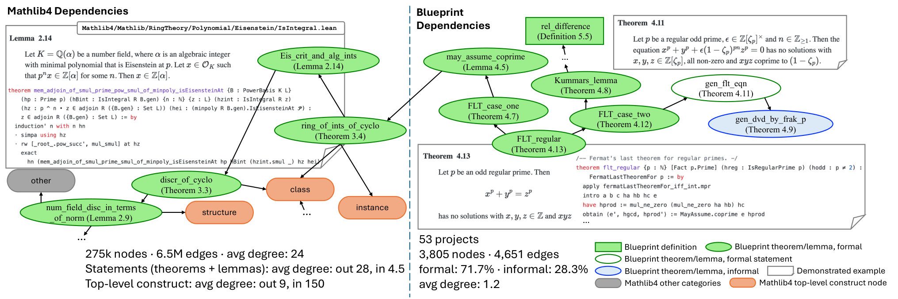

Extracts typed dependency graphs from Mathlib4 and 53 Lean Blueprint projects to train a premise selector for LLM-based Lean 4 provers.
Abstract
LLM-based theorem proving in Lean 4 has advanced rapidly, but provers are difficult to leverage newly contributed lemmas, because retrieval skews toward popular foundational lemmas, leaving the right premises buried among hundreds of thousands of candidates. Existing neural selectors rank candidates by semantic similarity, with three intrinsic limitations: frequency-skewed retrieval, isolated pairwise ranking, and degradation on out-of-distribution queries such as competition problems and informal language. Given that mathematics is structured by dependencies rather than similarities, we restore this signal to both the training data and the model. We curate two underused dependency resources. We conduct the first systematic mining of 53 Lean Blueprint projects, a previously untapped corpus of 3,805 manually curated informal+formal nodes that capture rare, research-level premises absent from Mathlib4. We further pair it with the extraction of comprehensive, typed, multi-level Mathlib4 dependencies. We then introduce DAPS, a dependency-aware premise selector with a structural neighborhood encoder, a group-level contrastive objective, and a Mathlib-then-Blueprint adaptation procedure. DAPS reaches 78.74 Recall@16 on Mathlib4-Heldout (+11.41 over the strong selector LeanHammer) and widens the margin to 7xrecall on competition-style queries. Downstream, its selected premises raise Goedel-Prover-V2-8B Pass@4 on miniF2F-test from 49.90 to 54.03 and improve all four general-purpose LLMs on the informal IMO-ProofBench (up to +11.4% relative). Project page: https://daps-eth.github.io/.
Problem
Neural premise selectors for Lean 4 rank lemmas by semantic similarity. As a result, retrieval favors popular foundational lemmas, ignores whether the top-K premises work together as a set, and degrades on out-of-distribution queries such as competition problems and informal text. Rare and newly added lemmas in Mathlib4 and in research formalization projects therefore stay hard for provers to use.
Approach
The authors extract a typed, multi-level dependency graph from Mathlib4 with 15 edge categories and 6.5M edges. They also mine 53 Lean Blueprint projects, giving 3,805 informal and formal nodes, and derive four retrieval benchmarks from these resources. DAPS combines a structural neighborhood encoder over the dependency graph with a group-level contrastive objective. Training first uses the Mathlib graph and then continues on Blueprint data.

Figure 1 : One dependency graph spanning Mathlib4 (left) and a representative Blueprint project (right). The two resources differ in density and composition. Mathlib4 averages 24 edges per node with strong directional asymmetry across node types, while Blueprint dependencies are much sparser, averaging 1.2, but carry research-level out-of-Mathlib4 declarations and informal L a T e X signals.
Results
DAPS reaches 89.25 Recall@32 on Mathlib4-Heldout, 11.41 points above LeanHammer, and gives large gains on competition-style queries. Its premises raise Goedel-Prover-V2-8B pass@4 on miniF2F-test from 49.90 to 54.03. They also improve four general-purpose LLMs on IMO-ProofBench, by up to 11.4% relative.
Method
Mathlib4-R
Mathlib4-H
DAPS-Coll.
DAPS-BP
ReProver
36.97
43.48
1.24
32.04
LeanHammer
73.99
77.84
3.19
40.42
DAPS
80.68
89.25
23.53
50.08
Recall@32 (mean over three runs) across the four benchmarks
Premises
pass@1
pass@2
pass@4
w/o premises
36.48
43.62
49.90
LeanExplore
40.37
47.18
52.36
LeanHammer
37.45
43.90
48.93
DAPS
39.96
47.51
54.03
miniF2F-test with Goedel-Prover-V2-8B, with and without retrieved premises